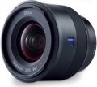

器材库 > 35mm画幅AF定焦镜头 > Batis 25/2

详细规格
镜头类型
广角镜头
发布日期
2015-05-04
焦距
25mm
最大光圈
f/2
最小光圈
f/22
视角（对角）
82°
视角（水平）
72°
视角（垂直）
51°
镜头结构
10片/8组
最近对焦距离
20cm
滤镜口径
67mm
镜头卡口
Sony E
防抖
否
颜色
黑色
尺寸
81×92mm
重量
335g
备注
支持FE卡口自动对焦
该产品暂无存档的网友点评
产品图 / 样片
评测 / 相关文章
- 详细内容 （存档）
- FE镜头强援 蔡司Batis系列双镜评测 （存档）
- ［试用］蔡司Loxia 21mm大战蔡司Batis 25mm （存档）
- ［资讯］DXO给出Batis 25mm得分 （存档）
- ［试用］振翅高飞 蔡司Batis25/2看世界 （存档）
- ［资讯］蔡司Batis系列镜头本月17日开卖 （存档）